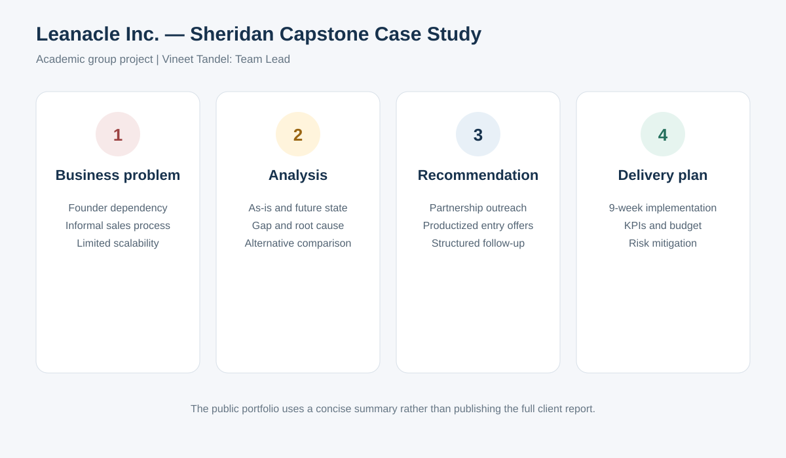

Project context
This Sheridan College capstone was completed by a five-member group for Leanacle Inc., a lean consulting business. I served as Team Lead and coordinated scope, tasks, milestone reviews and delivery.
Business problem
The analysis focused on founder dependency, an informal client-acquisition process, limited productized services and operational scalability.
Approach
- Reviewed the current business model and service process.
- Completed SWOT, current-state versus future-state and gap analysis.
- Compared strategic alternatives using weighted criteria.
- Prepared an implementation plan, resource estimate, KPIs and risk mitigation.
Recommendation
The group recommended partnership-driven outreach supported by productized entry offers and a structured follow-up process. The plan was organized into a nine-week implementation sequence.
Confidentiality approach: The public portfolio presents a concise academic summary. The full client report is not included as a download.